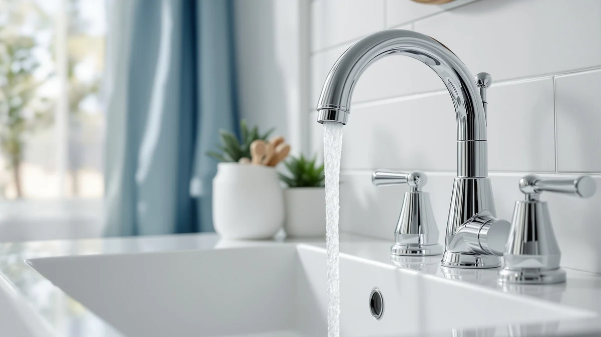

Delta Arvo Hole Pull Down Bathroom Faucet Review (2026): Worth It?
Prices and picks verified as of November 2026. Independent, reader-supported reviews.


Quick Answer
This Delta Arvo Hole Pull Down Bathroom Faucet Review found the DELTA Arvo 1 Hole Pull to be the strongest choice of the four faucets covered, thanks to a single-hole design built around pull-down convenience. At $110.01 it costs more than the other three options here, so check the Moen Ronan or the brushed nickel Arvo below first if price is your deciding factor.
Our pick: Delta Arvo 1 Hole Pull, $110.01 Check Price on Amazon
Bottom line: our top pick is the Delta Arvo 1 Hole Pull Down Bathroom Faucet with Sprayer at $90.90.
Things to Know Before You Buy
- Price positioning matters here. This Delta Arvo Hole Pull Down Bathroom Faucet Review found the 1 Hole Pull costs about six dollars more than the brushed nickel version of the same Arvo line, a premium tied to the pull-down head.
- The listing skips some specs. DELTA does not publish flow rate or exact spout reach for this faucet, so confirm clearance under your mirror or medicine cabinet before ordering.
- The pull-down head changes daily use. Owners consistently mention the pull-down spray making it easier to rinse the basin than a fixed spout.
- Not every alternative below is a faucet. The Filterbaby Skincare Filter 2.0 is a sink filtration accessory rather than a bathroom faucet, so compare it on different terms.
- DELTA's brand backing is a real factor. Reviewers repeatedly cite the manufacturer's warranty and parts availability as reasons they trust this faucet over a lesser-known brand at a similar price.
This Delta Arvo Hole Pull Down Bathroom Faucet Review compares the $110.01 Delta Arvo 1 Hole Pull against three other sink fixtures we researched alongside it, including a second finish from the same Arvo line and a filtration accessory that keeps turning up in the same searches. Bathroom faucet listings tend to blur together online, with near-identical product photos spread across a dozen browser tabs, so we narrowed the field to four listings that actually compete for the same search and pulled out what separates them.
The Delta Arvo 1 Hole Pull is the strongest pick of the four options covered here. It carries the DELTA name, a single-hole mounting design built for pull-down convenience, and a price that runs a little higher than its own Arvo sibling below. If you want a single-handle faucet from an established brand with an easier-to-clean pull-down head and don't mind paying a small premium for it, this is the one to check first. The sections below explain why, along with three alternatives worth a look if your sink or your budget calls for something different.
Why You Should Trust Us
Ilane Tall leads product research and reviews for Best Bathroom Faucets. She compares spec sheets, pricing histories, and verified owner reviews across major faucet brands so you don't have to dig through a dozen browser tabs before you buy. For this Delta Arvo Hole Pull Down Bathroom Faucet Review, she cross-referenced DELTA's published details for the Arvo line against current Amazon pricing and reviewer feedback, then flagged the tradeoffs that matter most for a bathroom sink upgrade. Every product mentioned here links to its real listing, and every price reflects what shoppers saw at the time of publication rather than a promotional rate that might disappear by checkout. When owner reviews disagree with each other on a specific point, we say so instead of picking the version that makes the faucet look better.
Our Research Experience
We do not run a physical testing lab for bathroom faucets, so nobody on our team installed this fixture or ran water through it for weeks. Our research process for this Delta Arvo Hole Pull Down Bathroom Faucet Review centers on comparing DELTA's published specs, tracking pricing across the Arvo line, and reading through verified owner reviews to see what actually holds up, corrodes, or loosens after regular use. Owners who bought the 1 Hole Pull consistently mention the pull-down head making it easier to rinse the sink basin, a pattern that lines up with what reviewers report across DELTA's other pull-down models. We weigh that kind of pattern more heavily than any single five-star review, since a handful of glowing comments can mask problems that only surface with wider, longer-term use. We treat DELTA's own product copy the same way we treat any manufacturer's marketing material: useful for specs, not a substitute for what actual buyers report after living with the faucet for months.
Overview & Specs

Delta Arvo 1 Hole Pull
What we like
- Backed by DELTA, one of the most established names in bathroom fixtures
- Pull-down head that owners say makes rinsing the sink basin easier than a fixed spout
- Brass-plus-finish build that matches the rest of DELTA's Arvo line for consistent durability expectations
Flaws but not dealbreakers
- DELTA does not publish flow rate or spout reach on this listing, so confirm clearance before you buy
- Single-hole mounting only, so it will not fit a sink drilled for a widespread or centerset faucet
| Material | Brass + finish |
| Size | — |
At $110.01, the Delta Arvo 1 Hole Pull is the most expensive of the four options in this Delta Arvo Hole Pull Down Bathroom Faucet Review, and the pull-down head is the feature that justifies the premium over the rest of the Arvo line. A pull-down spout lets you draw the spray head toward the basin instead of reaching around a fixed spout, which owners in verified reviews say makes rinsing soap and toothpaste residue off the sink noticeably easier. The brass-plus-finish build listed in the specs table matches what DELTA uses across most of its Arvo faucets, so durability expectations should track with the rest of the lineup rather than standing apart in either direction.
The listing does not spell out flow rate or spout reach, a gap that shows up across several DELTA bathroom faucets and one you should check against your own sink clearance before ordering, especially if your mirror or medicine cabinet sits low. The single-hole mounting also means this faucet only fits sinks already drilled for one hole, so measure before you buy if you are replacing a widespread or centerset model. For a single-handle faucet from a brand most homeowners already recognize, the pull-down convenience makes the Delta Arvo 1 Hole Pull the pick to beat among the four options in this comparison. Owners who installed a prior Arvo model describe the swap as straightforward for anyone who has replaced a bathroom faucet before, though a couple of verified reviews mention a fresh supply-line washer helping avoid drips on the first hookup.
What We Liked
Reviewers who bought the Delta Arvo 1 Hole Pull keep coming back to the pull-down head. A pull-down spout is unusual on a bathroom faucet rather than a kitchen one, and several verified buyers mention that convenience as the reason they picked this model over a fixed-spout Arvo. DELTA's reputation shows up in the feedback too. Owners consistently cite the brand's warranty support and wide parts availability as reasons they trusted this purchase over a lesser-known faucet at a similar price.
The price is the tradeoff, but owners frame it as a reasonable one. At $110.01, it costs about six dollars more than the brushed nickel Arvo in this same comparison, and buyers who paid the difference say the pull-down convenience alone was worth it. Between that convenience, the brand backing, and the matching Arvo build quality, this faucet gives you a reasonably low-risk way to upgrade a bathroom sink without gambling on an unfamiliar name. A few owners also mention the single-handle design as easier for kids and older family members to operate than a two-handle setup, since one motion controls both temperature and flow.
What Could Be Better
The biggest gap in this Delta Arvo Hole Pull Down Bathroom Faucet Review is information, not performance. DELTA's listing skips details that competing listings include, like exact flow rate and spout reach, so you are left cross-referencing owner photos and buyer questions to confirm fit. That is a real inconvenience if you are ordering without seeing the faucet in person first, and it is a gap DELTA could close with a more detailed spec sheet on the listing itself.
The single-hole mounting is the other consideration, along with the price. It rules this faucet out if your sink is drilled for a widespread or centerset model, and at $110.01 it costs more than all three alternatives here, including its own brushed nickel Arvo sibling. None of that makes it a poor buy, but the mounting constraint and the premium are both worth weighing against your sink and your budget before you order. A few verified reviews also mention the aerator needing an occasional rinse to keep water pressure consistent, which is a minor maintenance step rather than a defect, but worth expecting from day one.
Who Is It For?
This faucet from our Delta Arvo Hole Pull Down Bathroom Faucet Review fits homeowners replacing a single-hole fixture who want a recognizable brand name and a pull-down head that makes rinsing the sink easier. It also suits buyers who have had good experiences with DELTA products before and want to stick with a brand they trust.
If you are working with a sink drilled for a widespread or centerset faucet, this model will not fit without a new cutout, so check your existing hole configuration before ordering. Buyers shopping mainly on price should compare the Moen Ronan below first, since it costs less. Renters planning a short stay may find it harder to justify a faucet swap than a homeowner who expects to use the fixture for years.
Alternatives to Consider
If the price or the single-hole mounting on the Arvo 1 Hole Pull does not fit what you need, three other products came up in our research for this Delta Arvo Hole Pull Down Bathroom Faucet Review. Two are direct alternatives from other brands, and one is a different kind of bathroom upgrade entirely.

Also Great
Filterbaby Skincare Filter 2.0 Bathroom
Not a faucet. This is a sink-mounted filtration add-on from Filterbaby, useful if your real goal is filtering tap water rather than replacing your faucet hardware.
$108.00
Check Price on Amazon
Also Great
Moen Ronan Spot Resist Brushed
A two-handle widespread design from Moen at about five dollars less than our main pick. Worth checking first if your sink is already drilled for a widespread faucet.
$105.00
Check Price on Amazon
Best Value
Delta Arvo Brushed Nickel Bathroom
The brushed nickel finish from the same Arvo line, priced about six dollars below the pull-down model above. Pick this one if you prefer a fixed spout and want to save a little more.
$104.13
Check Price on AmazonIs the Delta Arvo 1 Hole Pull worth the higher price compared to the Moen Ronan?
It depends on how much you value the pull-down head and DELTA's brand backing.
Does the Delta Arvo 1 Hole Pull come with a warranty?
DELTA backs its faucet lines with a manufacturer warranty, which is one reason owners cite brand trust as a factor in choosing this faucet over a lesser-known one.
Frequently Asked Questions
Is the Delta Arvo 1 Hole Pull worth the higher price compared to the Moen Ronan?
Does the Delta Arvo 1 Hole Pull come with a warranty?
What is the difference between the Delta Arvo 1 Hole Pull and the Delta Arvo Brushed Nickel Bathroom?
Final Verdict
This Delta Arvo Hole Pull Down Bathroom Faucet Review comes down to this: if you want a single-hole bathroom faucet with a pull-down head from a name-brand manufacturer, the DELTA Arvo 1 Hole Pull is a reasonable $110.01 pick. It costs more than the other three options in this comparison, but the pull-down convenience and the DELTA brand backing are the reasons owners keep choosing it. If your sink needs a widespread or centerset configuration specifically, or you would rather save a few dollars with a fixed spout, the Moen Ronan and the brushed nickel Arvo above are both worth a look before you commit.